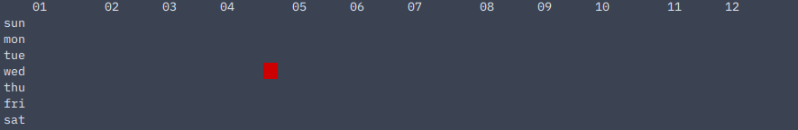

intro
welcome to habitmap!
habitmap is a command-line app to track your habits and visualise how committed you are to making or maintaining them with colorful heatmaps!
habitmap allows you to:
- add and remove habits
- track your habits
- customise how many steps each habit has (see the explanation on steps here)
- print out several types of heatmaps based on each habit
- customise the colors in the heatmaps + make your own aliases for the colors!
contribute
habitmap is open-source and free! the sourcecode for habitmap can be found here on GitHub.
for any feature requests, feel free to open a new issue here.
if you'd like to make your own features and integrate them into habitmap, feel free to make your own branch and then pull request or a fork if the feature does not get accepted. in the latter case, do remember to link and credit the original habitmap repository.
to see the source code for this book, see the habitmap-docs repository (also on GitHub).
license
both habitmap and its documentation are under the GNU General Public License v3.0.
this documentation was written in mdBook.
installation
welcome to the installation instructions page!
cli
requirements
- python 3 (3.10 and up)
- any working command line / terminal
installation
firstly, clone this repository.
$ git clone https://github.com/shuu-wasseo/habitmap
secondly, add the habitmap directory into your PATH. thirdly, make the hbmp file executable with the following code.
$ cd habitmap
$ chmod +x hbmp
lastly, enter the following in your browser to install all relevant and necessary packages.
$ make install
if this is your first time using habitmap and you would like to start with a few sample habits, enter:
$ make setup
if it runs correctly, it should add the habits 'exercise', 'hydrate' and 'meditate' before printing out the help message.
now, you are able to use habitmap! enter "hbmp" in your terminal to begin!
discord bot
get the discord bot for your discord server here.
how it works
a brief introduction to how habitmap works. if this is your first time using habitmap, please read this before moving on to any other sections.
steps
what are steps?
steps are the number of different values that any record can have. if a habit only has the option to be marked as done or not done, we count that as one step. if a habit has two steps, one would be allowed to mark the habit as done, undone or half-done. similar rules apply for three or four steps.
here is an example for a habit with 4 steps.
| x in step x of 4 | desc |
|---|---|
| 0 | the habit has not been done at all. |
| 1 | the user is one step closer to their goal (for the day). |
| 2 | the user is halfway towards their goal. |
| 3 | the user is one step away from their goal. |
| 4 | the user's goal for the day is reached. |
the stepno for any habit is the number of steps that habit has. due to the limitations of the characters that can be printed, the max stepno is 4.
here is a quick conversion table:
| (x, y) in step x of y | same step if habit stepno changed to 4 |
|---|---|
| (0, 1), (0, 2), (0, 3) | (0, 4) |
| (1, 3)1 | (1, 4) |
| (1, 2) | (2, 4) |
| (2, 3)1 | (3, 4) |
| (1, 1), (2, 2), (3, 3) | (4, 4) |
the database stores all values with stepno 4 to avoid complications when the stepno for each habit is changed. thus, if a habit has the record step 2 of 3 on a certain day, that number will be recorded in the database as 3.
not only does this make conversion convenient, it also allows easier translation from numbers into the five characters used for heatmaps.
| x in step x of 4 | square printed in heatmap (white) |
|---|---|
| 0 | |
| 1 | ░░ |
| 2 | ▒▒ |
| 3 | ▓▓ |
| 4 | ██ |
while these characters do not look like squares on this site, they resemble squares much more in the terminal where habitmap is to be run.
do note that changing the stepno of a habit will not change its data. for example, if a habit with stepno 3 has its stepno changed to 2, the data will remain in its original form.
while 1/3 and 2/3 are both closer to 2/4 (1/2) than 1/4 and 3/4 respectively, making them both 2/4 would mean they would be indistinguishable in maps. giving these two values different values when the stepno is changed to 4 maintains a clear difference between 1/3 and 2/3.
heatmaps
what are heatmaps?
heatmaps are a form of data presentation. according to oxford languages, heatmaps are:
a representation of data in the form of a map or diagram in which data values are represented as colours.
while there are many types of heatmaps, habitmap only uses the following three.
| heatmap | x-axis / column | y-axis / row | cli (hbmp map) | discord bot | description |
|---|---|---|---|---|---|
| daily | day | habit | -d / --day | /durm | allows you to see your progress in committing to each habit across multiple days. |
| average per duration | duration (week/month/year) | habit | -b / --bydur | /durm | similar to the daily heatmap, but you can view your average across a few weeks or months to more easily visualise long-term progress. |
| yearly calendar | week | day of the week | -y / --year | /yearm | similar to the github contributions heatmap at the bottom of the user profile, but only allows one habit and across one year. |
for more details on how to use these, see map.
configuration (cli only)
you can use the config.toml file to configure cli habitmap. currently, there are only three things to configure.
default stepno
default value: stepno = 4
everytime a new habit is made, its stepno will by this number by default.
default color
default value: defcol = ['ffffff']
everytime a map is printed without specifying colors, these colors are used instead. you can put a single color or multiple colors here, but make sure they are in the form of a list or array.
having the default colors ['red', 'green', 'blue'] would have the same effect as manually typing 'red green blue' at the end of each command. do note that you can also put custom color names here.
custom colors
default value: cols = []
any custom colors can be placed here. cols should be a list of lists in the format ['name/alias', 'color'] where 'color' is of any format specified here.
for example:
cols = [
['color1', 'fc0099'],
['color2', 'ffcc00']
]
commands
due to habitmap having a cli version and a discord bot version (habitmap-bot), we will separate the two command documentations although both versions support the same purpose. this also allows us to make way for documentation of the tty version of habitmap, if or when it is made.
sections
value types
in the parameters and options lists, multiple types of values can be seen.
| value type | cli parameters/options | discord bot parameters/options | description |
|---|---|---|---|
| string | [name] (habit -a), [new] (acc -e) | [type] (/edith) [username]/[password] (/login, /signup, /edita, /dela) | any string. |
| habit | [habit]/[habit2] (habit -r/t/m/s, map -y) | [habit] (/edith, /trackh, /moveh, /steph, /yearm) | name of any existing habit. |
| credential | [credential] (acc -e) | [credential] (/edita) | "username" or "password". |
| number | [number] (habit -t) | [number] (/trackh) | any number from 0-4. |
| stepno | [stepno] (habit -s) | [stepno] (/steph) | any number from 1-4. |
| color | [colors] (map -d/m/y/b, samplecolors) | n/a (colors not supported) | any hex code without the preceding '#'1, any 4-bit colors or any custom color names. |
| day | [day] (habit -t), [start]/[end] (map -d/b) | [day] (/trackh), [start]/[end] (/durm) | any date in ISO format (YYYY-MM-DD), 'tdy', 'yst' or the first three letters of any day in the week. |
| month | [start]/[end] (map -b) | [start]/[end] (/durm) | any month in ISO format. (YYYY-MM, date without last two digits / day) |
| year | [start]/[end] (map -y/b) | [start]/[end] (/durm, /yearm) | any year from 1 - 9999 AD. (without the 'AD') |
due to the fact that python ignores arguments or options starting with '#', hex codes should be provided without a preceding '#' in the console. for standardisation, hex codes in the config.toml file should also not have a preceding '#'.
cli
here is the full list of commands for the cli version of habitmap as seen when running hbmp with no commands or arguments.
usage: hbmp [command] ([subcommand] [parameters] ([options]))
list of commands, parameters and options:
command:
-a, --arg. [parameter] ([option]) description
habit:
-a, --add [name] add a new habit (if not already existing).
-r, --remove [habit] remove a habit.
-t, --track [day] ([habit] [number]) add or edit a record.
-l, --list list all habits.
-m, --move [habit] [habit2] moves one habit after another habit.
-s, --steps [habit] [stepno] set the default number of steps in heatmap (number from 1-4)
map:
-d, --day [start] [end] ([colors]) view heatmap for all habits from one day to another.
-m, --month [start] [end] ([colors]) view heatmap for all habits from the start of a month to the beginning of another.
-y, --year [year] [habit] ([colors]) view yearly calendar heatmap for a habit.
-b, --bydur [start] [end] [duration] ([colors]) view heatmap based on average of week/month/year.
acc:
-i, --login log in to habitmap.
-o, --logout log out from habitmap.
-e, --edit [credential] [new] edit habitmap account credentials.
-d, --delete delete habitmap account.
help: see all commands and explanations.
samplecolors: ([colors]) see all custom colors or the given colors in the terminal.
these five commands will be split into four pages.
habit
this page will explain the "habit" command.
to refer to the definition/description of any value type, see commands.
-a, --add
usage: hbmp habit -a [name]
adds a new habit with name [name] to the database.
$ hbmp habit -a habit1
habit 'habit1' added.
| value | type |
|---|---|
| name | string |
discord equivalent:
/edith
-r, --remove
usage: hbmp habit -r [name]
removes the habit with name [name] from the database.
$ hbmp habit -r habit1
habit 'habit1' removed.
| value | type |
|---|---|
| name | habit |
discord equivalent:
/edith
-t, --track
usage: hbmp habit -t [day] ([habit] [number])
adds or edits the record of habit [habit] on [day] and changes it to [number].
example with 4-step habit1 and 3-step habit2 on 1969-06-09:
$ hbmp habit -t tdy habit1 4
value of habit habit1 on 1969-06-09 changed to 4 of 4.
$ hbmp habit -t yst habit2 2
value of habit habit2 on 1969-06-08 changed to 2 of 3 (3 in 4-step).
if [habit] and [stepno] are left blank, you will be prompted to enter a number for every habit that you have.
$ hbmp habit -t tdy
habit1 (4)? 4
value of habit habit1 on 1969-06-09 changed to 4 of 4.
habit2 (3)? 3
value of habit habit2 on 1969-06-09 changed to 2 of 3 (3 in 4-step).
| value | type |
|---|---|
| day | day |
| habit | habit |
| number | number from 0 to [habit]'s stepno. |
discord equivalent:
/trackh
-l, --list
usage: hbmp habit -l
lists all habits.
example with two habits, habit 1 and habit 2:
$ hbmp habit -l
you have the following habits:
- habit1
- habit2
discord equivalent:
/listh
-m, --move
usage: hbmp habit -m [habit] [habit2]
moves [habit1] from its origial position to right after [habit2], then prints out the list of habits (like in habit -l).
$ hbmp habit -l
you have the following habits:
- habit1
- habit2
$ hbmp habit -m habit1 habit2
you have the following habits:
- habit2
- habit1
| value | type |
|---|---|
| habit1, habit2 | habit |
discord equivalent:
/moveh
-s, --steps
usage: hbmp habit -s [habit] [stepno]
sets the default number of steps for [habit] to [stepno]. having one step would mean that you either have or have not done the habit but having more steps allows you to indicate anything in between.
$ hbmp habit -s habit1 4
stepno for habit1 changed to 4.
| value | type |
|---|---|
| habit | habit |
| stepno | stepno |
discord equivalent:
/steph
map
this page will explain the "map" command.
to refer to the definition/description of any value type, see commands.
-d, --day
usage:hbmp map -d [start] [end] ([colors])
displays one bar per day of each habit's data from [start] to [end] as well as the overall completion of each day's habits, optionally in [colors].
example with 4-step habit1 and 3-step habit2 on 1969-4-20:
$ hbmp habit -t tdy
habit1? (4) 4
value of habit habit1 on 1969-4-20 changed to 4 of 4.
habit2? (3) 2
value of habit habit2 on 1969-4-20 changed to 2 of 3 (3 in 4-step).
$ hbmp map -d tdy tdy
yy 69
mm 04
dd 20
habit1 ██
habit2 ▓▓
overall ▓▓
88
| value | type |
|---|---|
| start, end | any day/month/year |
| colors | any number of colors |
-b, --bydur
usage: hbmp habit -b [start] [end] [duration] ([colors])
displays a single bar of each habit's data from [start] to [end] based on average for every [duration], optionally in [colors].
output is similar to -d | --day.
| value | type |
|---|---|
| start, end | any day/month/year |
| duration | 'week', 'month', or 'year' |
| colors | any number of colors |
-y, --year
usage: hbmp map -y [year] [habit] ([colors])
displays a calendar heatmap of the data in [habit] for [year], optionally in [colors].
example with 4-step habit1:
$ hbmp habit -t tdy habit1 4
value of habit habit1 on 1969-4-20 changed to 4 of 4.
$ hbmp map -y 1969 habit1
01 02 03 04 05 06 07 08 09 10 11 12
sun
mon
tue
wed ██
thu
fri
sat
| value | type |
|---|---|
| habit | habit |
| year | year |
| colors | any number of colors |
colors
it has been specified that here, a color can be any hex code (without preceding '#'), any custom color name any 4-bit color, but the optional parameter ([colors]) is a bit more complicated than just that.
let's use the example in -y | --year, but switch it up a little.
$ hbmp habit -t tdy habit1 4
value of habit habit1 on 1969-4-20 changed to 4 of 4.
$ hbmp map -y 1969 habit1 red
 as you can see, the one square is now red. while this is the basic use of the ([colors]) parameter, we can still take this to another level.
colors can also take as many arguments as you would like. if there are multiple arguments, each column will be the same color, and the order of the colors is the same order in which they would be entered.
if there are more columns than colors given, the colors will then repeat themselves in the same sequence over and over again.
let's follow up to the example in -d | --day this time, but imagine you have committed to the habits at the same rate for all 7 days of that week.
$ hbmp map -d sun sat red green blue
 as you can see, the red-green-blue pattern repeats until there are no more columns left.
as you can see, the red-green-blue pattern repeats until there are no more columns left.
if there are less columns than colors given, the last colors with no columns will simply be ignored.
acc
this page will explain the "acc" command.
to refer to the definition/description of any value type, see commands.
any input fields will be marked with <text to input>.
acc
usage: hbmp acc
without any parameters, "acc" prints out the login status (and username if applicable) of the user.
if not logged in:
$ hbmp acc
you are not logged in.
if logged in:
$ hbmp acc
you are logged in as (username).
discord equivalent:
/checkacc
-i, --login
usage: hbmp acc -i
log in to or sign up for habitmap.
$ hbmp acc -i
logging in...
habitmap will first ask you for your credentials.
enter username: <username>
enter password: <password, hidden>
if you are creating a new account:
this username is not registered. would you like to create a new account? (Y/n) <"y"/"n">
creating account...
if you are logging in to an existing account:
login successful!
you may or may not then be prompted to keep local data or data saved online.
in the case of having different data locally and online, you will most likely be asked whether you would like to keep your cloud data or your local data.
you have data on the cloud and saved locally. please pick one data file to keep. (cloud/local) <"cloud"/"local">
after the data finishes syncing, this message will be displayed.
data synced successfully.
discord equivalent:
/login or /signup
-o, --logout
usage: hbmp acc -o
log out from habitmap.
$ hbmp acc -o
are you sure you would like to log out? (y/N) <"y"/"n">
logging out...
discord equivalent:
/logout
-e, --edit
usage: hbmp acc -e [credential] [new]
edit habitmap account credentials.
for example, if i want to change my password to "password123!":
$ hbmp acc -e password password123!
are you sure you would like to change your password? (y/N) <"y"/"n">
enter your current password to verify: <current credential to be changed, hidden>
password verified.
your password has been changed.
| value | type |
|---|---|
| credential | credential |
| new | string |
discord equivalent:
/edita
-d, --delete
usage: hbmp acc -d
delete habitmap account.
$ hbmp acc -d
are you sure you would like to remove your account? (y/N) <"y"/"n">
account successfully deleted.
logging out...
discord equivalent:
dela
misc
this page will explain all other commands.
to refer to the definition/description of any value type, see commands.
help
usage: hbmp help
this command prints out a comprehensive guide (although not as comprehensive as this site) on each command and how to use it.
samplecolors
usage: hbmp samplecolors ([colors])
this command prints out colored text with either all colors in the config file or the given colors to allow the user to see if the colors work or fit well with their terminal.
if left blank, this command defaults to all colors listed in the config file.
$ cat config.toml
stepno = 4
defcol = "ffffff"
cols = [
["heejin", "fc0099"],
["hyunjin", "ffcc00"],
["haseul", "00ff7b"],
["yeojin", "ff6e14"],
["vivi", "ff98b4"]
]
$ hbmp samplecolors
the output of samplecolors will be multiple lines, each having "██ [name] ([hex code if not 4-bit])" in the color assigned to [name]. in this case:
if not left blank, this command will taken an unlimited amount of colors.
$ hbmp samplecolors red green blue
this time, the output will be in a similar format as before.

discord bot
all the commands will be split into 3 categories.
habit
this page will explain habit-related commands.
to refer to the definition/description of any value type, see commands.
edith
usage: /edith <add/remove> [habit]
adds or removes a habit based on name, then runs /listh.
for example, adding a habit to an empty list:
habit '<habit>' added.
you have the following habits:
- <habit>
| value | type |
|---|---|
| habit | habit / string |
cli equivalent:
hbmp habit -a / --add for /edith add
hbmp habit -r / --remove for /edith remove
trackh
usage: /trackh [day] [number(s)] [habit])
if habit is not left blank, this command adds or edits the record of habit [habit] on [day] and changes it to [number].
for example, changing the value of 4-step habit1 on 1969-06-09 with /trackh tdy 4 habit1:
value of habit habit1 on 1969-06-09 changed to 4 of 4.
if habit is left blank, this command edits all habits in the order seen in /listh, with values separated by a space.
for example, changing the value of habit1, habit2 and habit3 (all 4-step) on 1969-06-09 with /trackh tdy 4 4 4:
value of habit habit1 on 1969-06-09 changed to 4 of 4.
value of habit habit2 on 1969-06-09 changed to 4 of 4.
value of habit habit3 on 1969-06-09 changed to 4 of 4.
| value | type |
|---|---|
| day | day |
| number | number from 0 to [habit]'s stepno. |
| habit | habit |
cli equivalent:
hbmp habit -l
listh
usage: /listh
lists all habits.
you have the following habits:
- <habit1>
- <habit2>
...
do note that this command is called automatically after any change to the list of habits in /edith.
cli equivalent:
hbmp habit -l
moveh
usage: /moveh [habit] ([habit2])
moves [habit1] from its origial position to right after [habit2] or to tbe front if [habit2] is left blank, then runs /listh.
for example, take this /listh output...
you have the following habits:
- habit1
- habit2
and then run /moveh habit1 habit2.
you have the following habits:
- habit2
- habit1
| value | type |
|---|---|
| habit1, habit2 | habit |
cli equivalent:
hbmp habit -m
steph
usage: /steph [habit] [stepno]
sets the default number of steps for [habit] to [stepno]. having one step would mean that you either have or have not done the habit but having more steps allows you to indicate anything in between.
stepno for <habit> changed to <stepno>.
| value | type |
|---|---|
| habit | habit |
| stepno | stepno |
cli equivalent:
hbmp habit -s
map
durm
usage:/durm [start] [end] [duration]
displays one bar per [duration] of each habit's data from [start] to [end] as well as the overall completion of each day's habits.
example with 4-step habit1 and 3-step habit2 on 1969-4-20:
/trackh tdy 4 2
value of habit habit1 on 1969-4-20 changed to 4 of 4.
value of habit habit2 on 1969-4-20 changed to 2 of 3 (3 in 4-step).
then, run /durm tdy tdy day.
yy 69
mm 04
dd 20
habit1 ██
habit2 ▓▓
overall ▓▓
88
if you would like to see the average over a few weeks/months/years, feel free to put 'week', 'month' or 'year' as the [duration] as well.
| value | type |
|---|---|
| start, end | any day/month/year |
| duration | 'day', week', 'month', or 'year' |
cli equivalent:
hbmp map -d if [duration] is "day"
hbmp map -b for any other [duration]
yearm
usage: /yearm [year] [habit]
displays a calendar heatmap of the data in [habit] for [year], optionally in [colors].
example with 4-step habit1, set to value 4 on 1969-04-20:
01 02 03 04 05 06 07 08 09 10 11 12
sun
mon
tue
wed ██
thu
fri
sat
| value | type |
|---|---|
| habit | habit |
| year | year |
cli equivalent:
hbmp map -y
acc
this page will explain account-related commands.
to refer to the definition/description of any value type, see commands.
checkacc
usage: /checkacc
shows the login status (and username if applicable) of the user.
if not logged in:
you are not logged in.
if logged in:
you are logged in as (username).
cli equivalent:
hbmp acc
login
usage: /login [username] [password]
log in to habitmap.
logging in as (username)...
login successful!
cli equivalent:
hbmp acc -i / --login
| value | type |
|---|---|
| username | string |
| password | string |
signup
usage: /signup [username] [password]
sign up for habitmap.
creating account...
account creation complete!
cli equivalent:
hbmp acc -i / --login
| value | type |
|---|---|
| username | string |
| password | string |
logout
usage: /logout
log out from habitmap.
logging out...
logout successful!
cli equivalent:
hbmp acc -o / --logout
edita
usage: /edita [credential] [old] [new]
edit habitmap account credentials.
(credential) verified.
your (credential) is now (new).
cli equivalent:
hbmp acc -e / --edit
| value | type |
|---|---|
| credential | credential |
| old | string (original credential for verification) |
| new | string (new credential to change to) |
dela
usage: /dela [password]
delete habitmap account.
account successfully deleted.
cli equivalent:
hbmp acc -d / --delete
| value | type |
|---|---|
| password | string (for verification) |